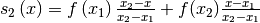
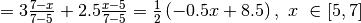
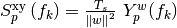
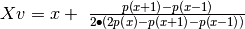

Introduction¶
Introducing the platform.
The platform
The CAAos platform was developed in Python 3 language, aiming for a
concise, easy to use experience. It is available under GNU GPLv3 license
at
*https://github.com/CAAosPlatform/CAAos*.
The installation package and instructions are also available, together
with a demo data of two subjects (one healthy control and one stroke
patient data), allowing users to operate the platform and its
functionalities. Figure 1 presents the home screen of the platform once
it is launched. 
Figure 1: Platform’s home screen.
Menu Entries¶
There are three main menu entries in the toolbar inside the home screen (see Figure 1), being them:
File: This tab enables the user to exit the platform;
- Toolboxes: This menu entry allows the user to initiate the
patient’s autoregulation analysis by first performing the preprocessing steps, as described in 2.2, and then the cerebral autoregulation analysis;
- Help: This menu entry contains information about the platform,
version, licenses, credits and authors.

Figure 2: Indication of the main tabs of the platform.
Using CAAos platform¶
2.1 Collecting the Data¶
Before initiating CAAos platform, the user needs to collect the subject’s signals. The signals are the cerebral blood flow velocity (CBFv) and arterial blood pressure (ABP). Other signals such as end-tidal carbon dioxide (EtCO:sub:2) can also be uploaded. The first two signals are collected as presented below.
2.2 Input file format
To import the signals to the platform, the collected data must be written in a text file. The file must inform the sampling rate in which the signals were collected, and the data must be written in columns, separated with a TAB.
This format allows users to import not just CBFv, ABP and EtCO2 signals but other time dependent data according to the user’s needs. The only information necessary are the Sampling rate (in Hz), column labels, units and the numeric data. Patient name and birthday are not used. Examination date is loaded from the file but it is not currently used for anything.
Patient Name: XXXXX
birthday:DD:MM:YYYY
Examination:DD:M:YYYY HH:MM:SS
Sampling Rate: XXXHz
Time Sample <CH_0_label> <CH_1_label> … <CH_N_label>
HH:mm:ss:ms N <CH_0_unit> <CH_1_unit> … <CH_N_unit>
00:00:00:00 0 0 xxx1 xxx2 … xxxN
00:00:00:10 0 0 yyy1 yyy2 … yyyN
Preprocessing Toolbox¶
Signal analysis starts with the preprocessing toolbox. This toolbox is accessible via Toolboxes menu entry, selecting ‘’Preprocessing’’.
The user is then requested to create a new job or load a previously created job file (see figure 6).
If the user selects ‘’New Job’’ the platform will require to select the text file containing the subject’s data. By doing this, the platform will load and show the subject’s data (as demonstrated in Figure 7).
- If the user selects “Load job”, the user is asked to selecte teh job
file (.job)to open a file containing a preprocessing previously performed.

Figure 6: Creating or Loading a .job file in Pre Processing toolbox.** **

Figure 7: Illustration of the first tab of the platform: Labels/Types.** **
At this point, the user can start the data preprocessing, which contains the following tabs:
Labels/types
Resample/Calibrate
Sync/Filter
Artefact Removal
RR detection
Beat to beat.
2.2.1 Labels/Types¶
When the Preprocessing toolbox opens, it will automatically show the Labels/Types tab, as represented in Figure 7. On the column “Labels” (Figure 8), the user will see the provisory name of the channels read automatically from the input data heading. In this stage, the user can label the signals following his/her preference. It is presented below an example of labeling the signals.
- Channel 0: Middle Cerebral Artery of the left cerebral hemisphere
(Label: CBFv_Left)
- Channel 1: Middle Cerebral Artery of the right cerebral
hemisphere (Label: CBFv_Right)
Channel 2: Arterial Blood Pressure (Label: ABP)
Channel 3: End-Tidal Carbon Dioxide (Label: ETCO2)
After labeling the signals, the user can select the signals’ unit and then the “Signal Type”. The last columns, Signal Type, is a preconfigured named list, to allow the CAAos platform identify the signals to the cerebral autoregulation analysis.

Figure 8: Example of indication of the column signal type.
Observation: Changin the unit will not change the numeric values. This is just a label used to show the results. For changing the unit, please see Resample/Calibrate tab.
The changes will be recorded when the user click on “Apply” button. The plots will be updated when the user click ‘Apply’ (Figure 9).

Figure 9: Graphics of the labeled signals.
he user can zoom in/out and move the plots using the mouse.
2.2.2 Resample/Calibrate¶
Once the settings of Labels/Types is performed, the user can move to the next tab “Resample/Calibrate”, as presented in the figure 10. In this tab, the user will be able to configure the following settings:
1) Change the Sampling Frequency Type – the user may choose among Minimum, Maximum or Customized sampling frequency. Since ABP and CBFv are recorded from different equipment, the sampling frequency can be different between them. See further details below in the “Background” subsection”.
2) Change the interpolation method - the available methods of interpolation are Zero, Linear, Quadratic or Cubic. The CARNet [3] suggests linear interpolation method.
3) Change the sampling frequency - The CARNet [3] also suggests a sampling frequency of 100 Hz, then the user can select “custom” and then define the sampling frequency value.
When this procedure is done, the user can click on “Resample”.
4) Signals’ calibration - the user may calibrate the signals individually, in special the ABP signal (if the user also measured ABP with another equipment simultaneously, such a sphygmomanometer, prior the beat-to-beat ABP recording). To calibrate a chosen signal, the user needs to set minimum and maximum parameters at “Min” and “Max” columns. Calibration methods includes “Absolute” and “5/95 percentile” and it can be applied to a signal window or to the entire signal data. The user must click on “Calibrate” to finalize the procedure.
 Figure 10: Illustration of
the tab Resample/Calibrate with indication of the tools.
Figure 10: Illustration of
the tab Resample/Calibrate with indication of the tools.
*Background*
Frequency Type: The CBFv and ABP signals have the sampling frequency according to the equipment in which they are collected. In our tests, the sampling frequency of Doppler-box (data acquisition equipment) was 100 Hz, however this maybe not be same for other research centers. Thereby, the user can adjust the CBFv and ABP signals to both have the same sampling frequency. To do that, on “Frequency Type”, the user can choose the minimum option to perform downsampling, i.e., the signals will be sampled with the sampling frequency defined by the signal with the lowest one. On the other hand, if the user chooses the maximum option, the platform will perform an upsampling, i.e., the signals will have the same sampling frequency value as the signal sampled fastest. Lastly, the user can choose to use the customized option to resample to any value.
Method: On method, the platform performs a spline interpolation which can be zero, linear, quadratic or cubic. Interpolating a function f(x) consists in approximating this function by another s(x) (Figure 11), starting from the original of the samples, so that the function s(x) has a larger number of samples that still go through the original samples.
Figure 11: Demonstration of an approximation from one function f(x) by linear spline functions s(x) [4].
On the platform CAAos, we use a spline interpolation of 3rd order to resample in 5Hz the bilateral CBFv and ABP beat to beat signals. According to the elasticity theory, if a curve is defined by a set of points (x, y), which is named as a spline, it can be described approximately as a piecewise function[5]. Splines are polynomials on subintervals that are connected with a specified degree of continuity. The order of the polynomials is not associated with the number of data point in this case, so, we can have k data points, and use a spline degree n where k >> n. Assuming k data points (x:sub:`1`, y:sub:`1`), (x:sub:`2`, y:sub:`2`), …, (x:sub:`k`, y:sub:`k`) such that x:sub:`1` < x:sub:`2 `<…< x:sub:`k`, a spline function y of degree n satisfies: (1) On each subinterval [x:sub:`i`, x:sub:`i+1`), y is a polynomial of degree n. (2) The derivatives of y up to and including the n-1 derivative are continuous on the domain [x:sub:`1`, x:sub:`k`].
The data points, when chosen such that the spline function passes through them, are called knots. For example, a spline of degree zero is a piecewise constant function constructed by simply assuming y to have a constant value on any subinterval [x:sub:`i`, x:sub:`i+1`) (Figure 12). A spline of degree 1 is a piecewise linear (piecewise affine) function constructed by connecting a straight line between every two data points (Figure 12). A spline of degree 2 is a piecewise quadratic function on each subinterval. The first derivative exists and is continuous, but it is not smooth.
A spline of degree 3 is a piecewise cubic function on each subinterval. The first and second derivatives are continuous functions. The second derivative is not smooth [5]. Figure 12 shows the resulting zero order, linear, quadratic, and cubic spline interpolation functions.

Figure 12: Illustration of the resulting zero order, linear, quadratic, and cubic spline interpolation functions [5].
Zero: It is a spline which has degree 0, also called a step function. This function has a constant value connecting two adjacent samples (Figure 12).

Figure 12: Example of a step function (the red graphic) [4].
Linear: A function S1(x) is an interpolate linear spline function of f(x) in the points x0, x1, …, xn and S1(x) can be written in each subinterval ([x:sub:i-1, xi], i = 1, 2, …, n) like:
(2)
By definition, S1(x) is a polynomial with degree 1 in each subinterval [x:sub:i-1, xi];
S1(x) is continuous in [x:sub:i-1, xi], by definition, and, in the points xi, S1(x) is well defined once is continuous in [a,b] and, therefore, S1(x) is a linear spline;
As an example of linear spline interpolation, we can calculate Si(x) for the function f(x) (Figure 13) by the following steps:
Figure 13: Example of a linear spline interpolation [4].
According with the definition,


Quadratic: Consider a set of k data points points (x:sub:`1`, y:sub:`1`), (x:sub:`2`, y:sub:`2`), …, (x:sub:`k`, y:sub:`k`), with k-1 intervals. We seek to find a quadratic polynomial on the i:sup:`th `interval [x:sub:`i`, x:sub:`i+1`]. In total, there are 3(k-1) coefficients. On each interval, the two equations and ensure that the spline passes through the data points which also ensure the continuity of the splines. These continuity equations will provide 2(k-1) equations. In addition, the connection of the quadratic polynomials at intermediate nodes will be assumed to be smooth, and so at every intermediate point the first derivative is assumed to be continuous, that is . These first-derivative continuity equations provide another k-2 equations. Finally, the second derivative at the starting point can be set to 0 to provide one additional condition so that the number of equations would be equal to 3(k-1) which is equal to the number of unknowns [5].
 Figura 14: Example of a quadratic spline interpolation [5].
Figura 14: Example of a quadratic spline interpolation [5].- Cubic: A cubic spline, S3(x), is a continuous piecewise
function in which each piece, Sk, is a polynomial of degree 3 in an interval [x:sub:k-1, xk], k = 1, 2, …, n. S3(x) has continuous first and second derivates, which makes it not have peaks and neither change abruptly the curvature around the points. Definition:
(3)
So, the calculation of S3(x) demands the determination of 4 coefficients for each k, in total of 4n coefficients: a1, b1, c1, d1, a2, …, an, bn, cn, dn. The conditions for S3(x) to be an interpolate spline of f(x) in x0, …, xn :
(n + 1) conditions for S3(x) to interpolate f(x) at its points;
(n – 1) conditions for S3(x) to be well defined at these points (continuity of S3’(X) in [x:sub:0, xn];
(n – 1) conditions for S’3(x) be continuous at [x:sub:0, xn];
Calibration: The chosen maximum and minimum values are applied to the signal, defining the new amplitude range in which the signal is settled. In “Absolute” method, the amplitude of the signal is fully calibrated. In “5/95 percentile” method, the minimum value is applied to the 5% of the amplitude and the maximum value to 95% of the amplitude, therefore, the calibration is applied in the range of 5 to 95% of the signal amplitude.
2.2.3 Sync/Filter¶
In this tab (Figure 15), the user is be able to synchronize the signals (indicated by number 1 in Figure 14), if needed. On these columns indicated by number 1, the user can select what settings will be applied to each channel, synchronization and/or filtering. Then, the user must click on the sync button to apply the operation to the signals (number 2 at Figure 14). The user will also be able to filter all signals after clicking on the “Filter” button (number 3 at Figure 14).
- Sync function: this tool allows performing the synchronization
between all signals, since they are acquired from different equipment and delay might be present. Also, the systolic peaks are physiologically correspondent in each graphic.
- Sync Methods: select the method between “Correlation” or “Fixed ABP
delay”. The second option is the most applied.
Filter: this function allows user to filter the signals.
- Filter Type: select the type among “Moving Average”, “Median” and
“Butterworth”.
ABP delay: It is set a delay in ABP signal in relation to the beginning of CBFv signal. The timing placed here depends on the equipment that is used to do the ABP reading.
Figure 15: Illustration of tab Sync/Filter.
*Background*
*Synchronization:* The synchronization of the CBFv and ABP signals can be done by a fixed delay or by Cross correlation.
*Cross correlation*: The cross correlation between the ABP and CBFv signals is calculated, and the highest cross-correlation’s peak will represent a point where there is a strong similarity between them, the instant of time in the highest peak is identified and used to synchronized both signals, shifting on of them.
*Filter:* an ideal filter perfectly selects the desired frequencies and reject the unwanted ones from the input signal, causing no more than a delay as a distortion of the signal. In this section of CAAos platform, the user may use the following filters: Moving Average filter, Median filter, and Butterworth filter.
*Moving Average Filter:* Moving Average filters are extremely common in digital signal processing because they have an easy implementation and are efficient on removing noises. The system is called moving average because the results of its application obtain the average of N samples positioned on the last input sequence sample [6].
A system of moving average of N – 1 order is defined by:
(4)
Where n is the current time, N - 1 is the number of samples used on the filtration, y[n] is the filtered signal and x[n-k] represents the set of values that will be summed.
*Median Filter:* A median is a value that separates a half with bigger values from another half with smaller values of a sample, i.e., a median is the middle value among a set of data. Therefore, the Median filter allows to reduce the noise by: first through an ordering of values in the neighborhood region (region in the signal with at least n + 1 points and it is all the same value), second through the preservation of edges (continuous ascent or descent with constant neighborhood), third through the removing of impulses (set of n points with different values comparing with the around neighborhood values), and, lastly, through a smoothing of the oscillations [7 – 8].
The median filter is an effective method that can, to some extent, distinguish out-of-range isolated noise from legitimate [9]. Specifically, the median filter replaces a sample by the median, instead of the average, of all samples in a neighborhood .
(5)
where represents a neighborhood defined by the user, centered around the location of the sample m in the signal [9].
*Butterworth filter:* The Butterworth filter is an approximation function developed to obtain a flatter response on the passband (continuous frequency set of electrical signals). A Butterworth function has the following equation:
(6)
[10] (See Figure 16).
Figure 16: Illustration of the function Butterworth, which shows that the higher values N takes, the greater is the descent, making the transition band better [10].
2.2.4 Artefact Removal¶
All signals can be visually inspected to identify artefacts and noise, and narrow spikes may be removed by following these steps (Figure 17):
First, the user visually inspects all the recorded data. If an artefact has to be removed, the user moves the (gray) cursor until the artifact (number 1 in Figure 17). Secondly, the user chooses the “Region Type” to select the area to be excluded (number 2 in Figure 17). Then, select the “Methods” to be applied. The methods for artefact removal implemented are linear interpolation, crop and join peaks (see section 2.2.4.1 for explanation).

Figure 17: Illustration of Artefact Removal tab.
2.2.4.1 Interpolated Method¶
This method makes a new interpolating function to gather the interval by approximating the values and removing the artefact. It is indicated to remove small artefacts.

Figure 18: Illustration of the Interpolate method for Artefact Removal.
2.2.4.2 Crop¶
This method makes a forced join between the extremes of the selection by
deleting the part selected and overlapping what left. 
Figure 19: Illustration of the Crop method for Artefact Removal.
2.2.4.3 Join Peaks¶
This method cuts periods comprised within the selection window and joins
the borders of the selection. It is indicated to remove larger
artefacts.
Figure 20: Illustration of Join Peaks method in Artefact Removal.
Caution: Removing large ranges of the signals can compromise the autoregulation analysis.
2.2.5 R-R peak detection¶
The platform finds the systolic peaks on the ABP signal for each cardiac cycle. There are two different methods implemented for R-R detection: automatic multiscale-based peak detection (AMPD) or the Prof. Marcos Duarte (MD) method. After that, the detected peaks (red marks in Figure 21) are extrapolated to bilateral CBFv signals (and EtCO2, if that is the case as well) once the user clicks the button “Find RR Marks”, the signals will be shown similarly in Figure 21.
Figure 21: Illustration of RR detection tab.

*Background*
*R-R detection:*
- *AMPD method*: The automatic multiscale-based peak detection (AMPD) is an algorithm which aims to have the following properties: not having “free parameters values” chosen by the user before the analysis; being able to detect peaks of periodic signals; and having an efficient detection of peaks which is developed against high and low frequency noises [11].
- *MD method:* consists to detect peaks (local maxima) or valleys (local minima) in data, one way to do this is to use the property that a peak (or valley) must be greater (or smaller) than its immediate neighbors. The function detect_peaks.py from Python module detects peaks (or valleys) based on this feature and other characteristics [12].
2.2.6 Beat-to-beat surrogate signal¶
The last tab of the preprocessing module generates the surrogate beat-to-beat from the load signals. To generate the beat-to-beat signals, an upsampling is needed, to allow equidistant sampling intervals and preserving the relevant frequency range components of cerebral autoregulation. CARNet[3] suggests cubic interpolation at 5 Hz. After interpolation, it is recommended to filter the beat-to-beat signals with a “moving Average” filter [3], see figure below. After the settings, the user needs to press the button “Extract beat-to-beat” and the platform will present the signals organized like the image below. The user also need to press the bottom “Filter” to visualize the signals filtered.

Figure 22: Illustration of beat-to-beat tab.
After doing this, the user can click in “save all”, which will create a “. job” file. This file contains all the preprocessing data.
*Background*
*Beat to Beat:* Once the onset (heart’s systole) on the curves of ABP and CBFv is defined, the platform calculates the average values of these signals in each heartbeat cycle. With the peaks marked on the R-R detection, each heartbeat is represented as the center sample value between the peaks’ sample values, and, in this interval, the average becomes the new order of the beat-to-beat signal. Thereby, the obtained signals are averages of ABP and CBFv in each heartbeat, having a low sampling frequency (< 2 Hz) which makes it necessary to perform an upsampling to 4Hz or 5Hz through a cubic spline interpolation (Figure 23) [3].

Figure 23: Illustration of interpolation and resampling process according to the calculation of the beat-to-beat average values in each heart cycle [3].
2.3 Autoregulation Analysis¶
To start cerebral autoregulation analysis, the user opens “Autoregulation Analysis” in “toolboxes” or with CTRL+T to load the saved “. job” file. Figure 22 illustrates the opening page of the autoregulation analysis toolbox. The cerebral autoregulation analysis is performed by the power spectrum density (PSD) analysis, transfer function analysis (TFA) and autoregulatory index (ARI) analysis. It is important to highlight that the CAAos platform performs the cerebral autoregulation analysis in each cerebral hemisphere independently.
PS: The “.job” document must be in the same directory as the text file that contains the patient data.
Figure 24: Illustration of Autoregulation Analysis first page.
2.3.1 Power Spectrum Density (PSD)¶
To apply the TFA, it is necessary to calculate the PSD of ABP and CBFv signals, as shown by the following procedures.
- First, the user needs to select Welch’s method parameters: segment
length, overlap window type (indicated by number 1 in Figure 25), PSD filter type and number of taps (number 2 in Figure 25). The platform default parameters are set as: segment length of 100 s, segment overlap of 50%, Hanning window and a triangular filter type, which is the configuration recommended by the literature [13]. The user can also choose the options “remove bias from segment”, which performs linear detrending and “use beat-to-beat data” – as opposed to using the filtered signals in 100 Hz
- Next, the user must click on “Compute PSD” to create the three
spectra: ABP’s Auto spectrum, CBFv’s Auto spectrum and ABP and CBFv Cross spectrum for each cerebral hemisphere. After that, the user can save the generated plots as an image by clicking “Save PSD data”.

Figure 25: Illustration of PSD tab.
*Background*
*Power Spectra Density (PSD):* The power spectrum is commonly defined as the Fourier transform of the autocorrelation function [10].
A popular method for evaluating the power spectrum is the direct approach. The direct approach is motivated by the fact that the energy contained in a digital signal, x[n], is related to the magnitude of the signal squared integrated over time [10]:
(7)
Hence |X(f)|2 equals the energy density function over frequency, also referred to as the energy spectral density, the power spectral density (PSD). In the direct approach the power spectrum is calculated as the magnitude squared of the Fourier transform (or Fourier series) of the waveform of interest [10]:
(8)
For each xp[n] segment, its modified periodogram Spxx(f) is computed as:
(9)
(10)
where w[n], n=0, …, L-1 is a given window function, :math:`` stands for complex conjugate and is the Fourier Transform of the windowed signal, here defined as:
(11)
(12)
where is the imaginary unit and is the associated frequency.
Finally, the estimated auto spectrum density of x[n] is given by the average of the modified periodograms
(13)
In case of cross spectrum between signals x[n] and y[n], eq. (3) and (7) are replaced by
 (14)
(15)
In this work x[n] is the ABP signal and y[n] is the CBFv signal. The cross-spectrum of CBFv with relation to ABP on each side of the brain quantifies how Much of the CBFv signal is explained by the ABP signal in each frequency band.
*Windowing:* The Windows are discrete sequences that, in CAAos platform, have the function of minimizing the distortions which are caused by spectral leakage. Thereby, four different windows are implemented in the platform: Triangular, Hanning, Hamming and Tukey windows.
Triangular: The triangular window is given by the function
[6]:
(16)

Figure 26: Illustration of triangular window [13].
Hanning: The Hanning window is given by [6]:
(17)

Figure 27: Hanning window[14].
Hamming: The Hamming window is given by [6]:
(18)

Figure 28: Hamming window[13].
Tukey: The Tukey window is given by [13]:
(19)
The parameter rr

Figure 29: Tukey window[13].
*Welch method:* Welch’s method obtains the average of modified periodograms (when the window is not rectangular). The periodogram is an estimate of the power spectrum. So, the sequency x(n) (equation 20) is divided in K equal segments with a window w(n) of length L [10]:
(20)
The segments can be contiguous (R=L) or not (R<L). The periodogram of segment r is:
(21)
where the U is normalization factor that compensates the bias in the estimative and is a finite length of the signal.
The medium periodograma is defined by:
(22)
In order to avoid problems of transfer and of intersegment dependency, it is convenient to use a non-rectangular window. Thereby, in the platform, the signals are divided in segments of 100 seconds with an overlap of 50% in time domain. Then, each segment is multiplied by the Hanning window, aiming to reduce the distortion. Lastly, the platform takes a moving average filter of triangular window with coefficients ¼, ½, ¼ to a greater smoothing of the signal [3].
To estimate the PSD, the software applies the Discrete Fourier Transform (equation 14) in the post Welch method signal, obtaining the values for the TFA analysis.
(23)
2.3.2 Transfer Function Analysis (TFA)
In this tab, the platform will calculate the TFA, generating values of gain, phase and coherence by the following procedures.
- Firstly, select the TFA method (indicated by number 1 at Figure 30).
The user may choose to use or not the option “Use coherence threshold” and “Ignore negative Phase”. Please, see the coherence threshold according to the 5 minutes recordings [3]
- Then, the user must click on “Compute TFA” for obtaining the plots of
Gain, Phase and Coherence, and export their values.
- The TFA results are divided into three frequency ranges: Very Low
Frequency (VLF), between 0.02-0.07Hz, Low Frequency (LF), between 0.07-0.2Hz, and High Frequency (HF), between 0.2-0.5Hz).
The user can save it as document “.tf” by clicking on “Save TFA data”.

Figure 30: Illustration of TFA tab.
*Background*
*Transfer Function Analysis (TFA):* TFA is a method to calculate parameters that reflect the dynamic of the cerebral autoregulation (CA) system assuming that the relation between ABP and CBFv is linear. With this assumption, the TFA is based on the Fourier decomposition of stationary signals of input and output, putting it in a sum of sine and cosine in multiple frequencies. Hence, the input senoidal signals are transformed in output senoidal signals of same frequency, however with a difference on amplitude (Gain) and a change on time domain (Phase) [3] – Figure 30.
Figure 30: Illustration of Gain and Phase [14].
To verify if the Gain and the Phase are reliable, the platform also calculates the Coherence Function to help identify segments that presents inconsistencies (figure 31). The Coherence variates amid 0 and 1, which values nearby 0 presents low reliability and values nearby 1 presents high reliability. The mean squared coherence quantifies the linearity degree between ABP and CBFv in each frequency value, therefore if low values of coherence are observed, the computation of the average TFA parameters in each preconized [3] frequency band disregards the corresponding samples.
 .
.
Figure 31: Illustration of analysis of gain, phase and coherence [3].
Furthermore, gain, phase, and coherence (respectively, equations 23, 24 and 25) are calculated from auto-spectrum (equation 26) and cross-spectrum (equation 27), which are given by [15]:
(24)
(25)
(26)
(27)
Where X and Y are power spectrums of ABP and CBFv. The Transfer Function H(f) (equation 28) [14], with the assumption of linearity [2], allows us to observe variations of CBFv in alterations of ABP, demonstrating a physiological system that has ABP as input and CBFv as output.
(28)
2.2.3 Autoregulation Index Analysis (ARI)¶
The ARI quantifies the cerebral autoregulation in a range between 0 and 9 (Figure 32), which 0 means absence of autoregulation and 9 the maximum of autoregulation. Thus, a preserved autoregulation usually presents ARI between 4-6.

Figure 32: Response of CA model to a shift in a ABP step (Tiecks et al. 1995) .
First, the user needs to define the response time according to the wanted interval. It usual to use 10 seconds as response time. Once this is done, the user can save the ARI in a “. ARI” file and finish the analysis of the patient. In the tab ARI, the platform presents the patient’s curve and the equivalent ARI curve (see Figure 33).

Figure 33: ARI result of a health patient.
*Background *
*Autoregulation Index*: The values of CBFv and ABP are utilized to calculate ARI which reflects a change in the cerebrovascular resistance per second comparing with the physiological changes in the ABP. A computer calculates a hypothetical curve of CBFv without the CA. This curve assumes that CBFv passively follows ABP’s course, i.e., the percentual variations of CBFv and ABP are equal. Thereby, if the current curve of CBFv of a random test fits in this computational model, the ARI will be 0. Other nine possible curves of computational models of CBFv were calculated, quantifying the autoregulation in a range of 0 to 9, where 0 indicates an absence of CA and 9 the maximum CA. In normal conditions of CA, the value of ARI is 5±1 [16]. Values lower than 4 indicates a failure of the CA mechanism, while ARI = 0 is a simulation of passive response in all variation of ABP which reflects in variations of CBFv. The effect of CA on CBFv can be approximated by differential equations of second order with state variables x1 and x2, which are related to CBFv changes in response of a change of ABP. The four following equations are proposals to obtain the ARI method: :math:``
For ARI estimation, the inverse Fourier transform of the Transfer Function H(f), obtained in TFA method, is applied, converting data back to the time domain. In the time domain, the impulse response function (IRF) is computed with a cut-off frequency of 0.5Hz. The IRF represents the CBFv temporal response to a very short, impulse-like disturbance in ABP. If the IRF remains flat, CBFv lacks feedback reaction and tend to follow ABP changes, characterizing absence of autoregulation. On the other hand, perfect CA is represented by a positive immediate change counteracted by a negative wave in the IRF, indicating a return of CBFv to its original level after ABP disturbance. Then, IRF is used to predict the CBFv step response to ABP changes [13]. The step response function is obtained with the time integral of IRF. It represents the CBFv temporal response to a steplike disturbance in ABP. ARI is assigned to each CBFv recording by using the best least squares fit between the CBFv step response and one of the 10 template curves proposed by Tiecks et al (1995) to provide an ARI estimate, which varies between absence of CA (ARI=0) to best observed CA (ARI=9).
For the calculation of the 10 ARI curves proposed by Tiecks (1995), CA effect on CBFv is approximated by a second-order differential equations set with state variables x1 and x2, related to changes in CBFv in response to an abrupt change in ABP. The following 4 equations are proposed to obtain the ARI method:
(28)
(29)
(31)
(32)
Where dP is the normalized variation between the mean ABP (P (t)) between beats, and its control value (Pm), in relation to its value of the critical closing pressure (CrCP, defined as 12 mmHg, Tiecks et al 1995). The segmentation of each heart cycle is done in the CAAos platform, described previously, in the beat-by-beat analysis, in which the mean ABP and CBFv values are obtained for each heartbeat. The variables x1 and x2 are of states in the second order system for a given number of samples (n); vM is the mean CBFv, f the sampling frequency and T the time constant.
The difference between step response function (SRF) and each template curve v(t), is estimated through the root mean square error (RMSE), described in equation 33. The curve that presents the lower RMSE is consider the best fit to the patient step response and defines the ARI integer value.
(33)
Thereafter, parabolic interpolation using neighboring values of the optimal ARI was employed to obtain estimates with two decimal places. This interpolation implemented uses the Finite Difference Method of parabolic equation, considering that ARI decimal value is obtained with the vertex of the parabolic curve, as described in equations 34 to 37.
(34)
(35)
(36)
 (37)
Where p(x) is the polynomial parabolic equation, X:sub:`v` is the point of vertex. The Finite Difference Method of parabolic equation is presented in equation 36, where x is the ARI integer value, and h the distance between ARI value and its neighbors.
References¶
[1] Payne, S. Cerebral Autoregulation: Control of Bood Flow in the Brain – SpringerBriefs in Bioengineering, University of Oxford, Oxford, UK. 2016.
[2] Liandra A. F. Yoshida, September 25, 2017. Federal University of ABC, PROPES.
[3] Claassen JA, Meel-van den Abeelen AS, Simpson DM, Panerai RB; international Cerebral Autoregulation Research Network (CARNet). Transfer function analysis of dynamic cerebral autoregulation: A white paper from the International Cerebral Autoregulation Research Network. J Cereb Blood Flow Metab. 2016 Apr;36(4):665-80.
[4] Ruggiero, MAG. Lopes, VLR. Cálculo numérico: aspectos teóricos e computacionais. 2nd edition. São Paulo: Pearson; 2000.
[5] Dow K, Adeeb S, Westlover L, Li W, Qiu W; (2021). Introduction to Numerical Analysis for Engineers. Retrieved from https://engcourses-uofa.ca.
[6] Nalon, JA. Intodução ao Processamento de Sinais. Rio de Janeiro: LTC; 2013.
[7] Sá, JPM. Processamento de Sinal: Conceitos, Métodos e Aplicações. Porto: Faculdade de Engenharia da Universidade do Porto. 2001. https://web.fe.up.pt/~jmsa/apsi/APSI-2.PDF.
[8] Junior, GB. Filtros e Morfologia. Maranhão: Universidade Federal do Maranhão. https://nca.ufma.br/~geraldo/vc/4.filtros.pdf.
[9] Median Filter, Harvey Mudd College engineering. January, 2019. http://fourier.eng.hmc.edu/e161/lectures/smooth_sharpen/node2.html.
[10] Semmlow, John, Signals, and systems for bioengineers, 2 ed., Elsevier Inc, 2012.
[11] Scholkmann, F. Boss, J. Wolf, M. An Efficient Algorithm for Automatic Peak Detection in Noisy Periodic and Quasi-Periodic Signals. Algorithms. 2012.
[12] Duarte, M. Detection of peaks in data. São Paulo: Universidade Federal do ABC. https://github.com/demotu/BMC/blob/master/notebooks/DetectPeaks.ipynb.
[13] MathWorks, Inc. Spectral Windows. Available at: https://www.mathworks.com/help/signal/windows.html.
[14] Van Beek A, Claassen JH, Marcel GM, de Rikkert OI, René WMM. Cerebral autoregulation: an overview of currentconcepts and methodology with special focus on the elderly. J Cerebr Blood Flow Metab, 2008;28:1071–1085.
[15] Panerai, RB. Cerebral Autoregulation: From Models to Clinical Applications. Cardiovasc Eng, 2008;8, 42–59.
[16] Tiecks, FM; Lam, AM et al. Comparison of Static and Dynamic Cerebral Autoregulation Measurements. Stroke 1995 26:1014-1019.